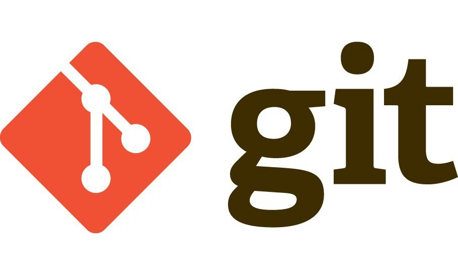

Software Engineer's workflow
Before my workterm, I knew close to nothing about the workflows of software engineers. During my
workterms at Pixieset,
I learned about how tasks are distributed amongst developers, concepts on sprints and its
retrospective & planning, and
the procedures before a task is deployed including PR reviews and feedbacks.
Workterms offer co-op students an opportunity to have a close look at modern days' software
engineer's work flow and some
hands-on experience with the tools they use. Tools such as Jira, retroIO, TestRail, and git
management program such as bitbucket and github.
One of the most valuable knowledge I learned was git and task deployment flow which will be
discussed in more details.
Git and Deployment
One of the most valuable experience I had with Pixieset was working with git. Working with git
means a lot of different things; Basic functionality of git such as commit, push, rebase, and
pull to understanding how multiple developers work in the same code base using branches and
merge to master without merge conflicts using pull requests. Reason why this experience was so
valuable is because all software engineers work with git and it is considered fundamental yet
essential tool you must know if you are a software engineer. I believe having an opportunity to
get hands-on experience with real life work environment is something you can never get from
school alone.
Pixieset used Jira and bitbucket to distribute tasks among developers and track the task's
progress. Bitbucket and Jira is one of the most renowned tools for git management used widely
across the world. Having the experience and skilled with these tools can be an asset when
competing for a position in the future.

Solidifying career goals
I believe vast majority of the computer science students including myself are not sure what
career path to pursue. I did not even know what options were available for me before my
workterms. One big perk of working for a tech company is that you will have an opportunity to
work with people in different departments with different roles. Dev ops, Back-end, Front-end,
Full-stack, database engineer, QA, SETs and more.
Working closely with them offers you to see what each of these roles expectations and
responsibilities are. And given that you are a co-op student, many will be willing to talk to
you or even arrange a meeting with you to answer any questions regards to career path and role
requirement if asked.